Mi experiencia en Moda ECCI
My experience at Moda ECCI
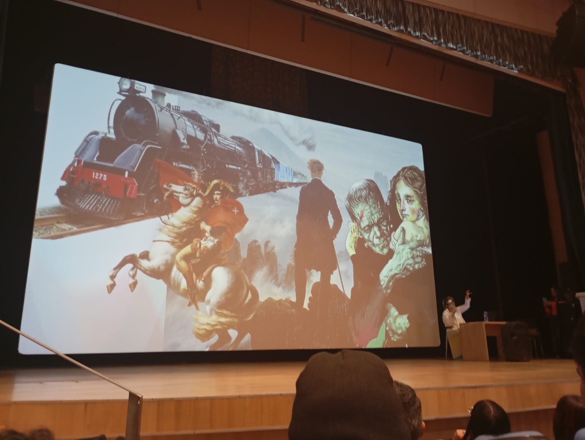
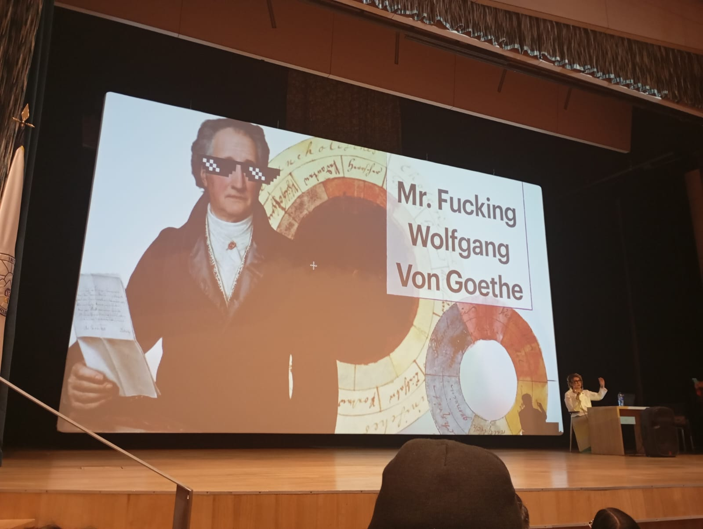
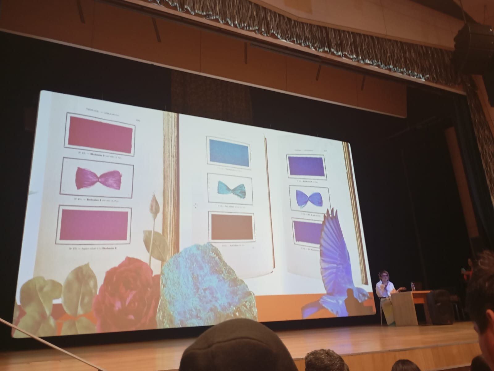
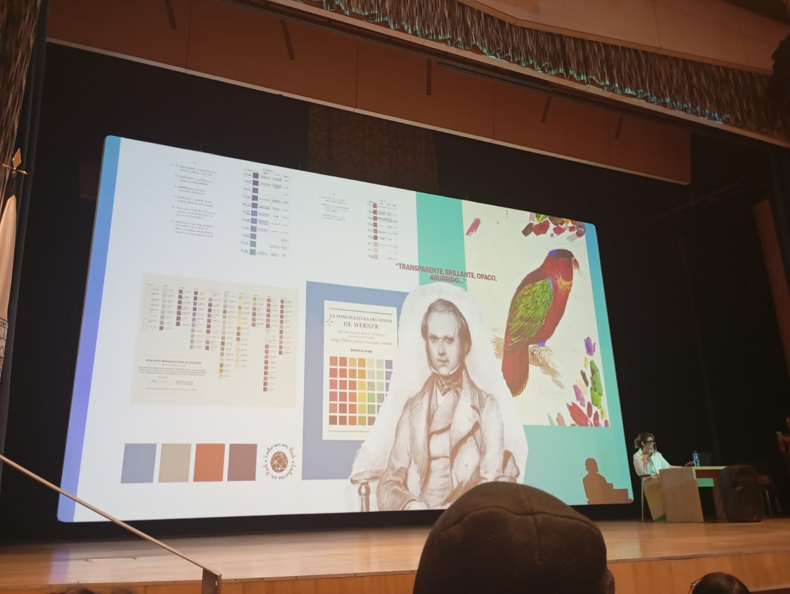
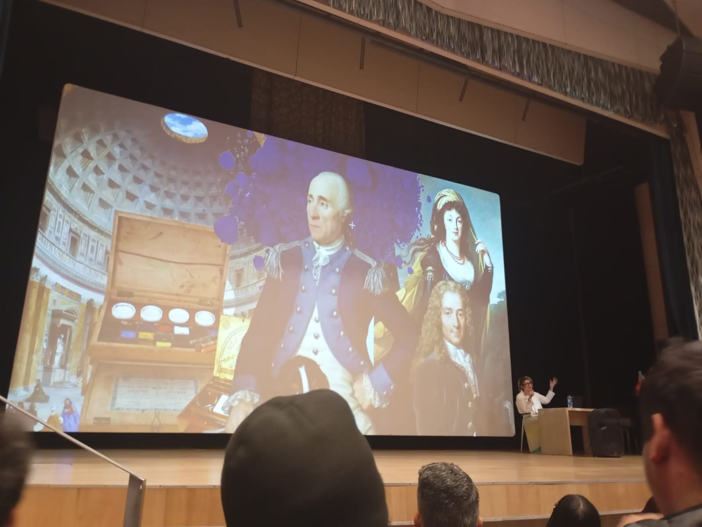
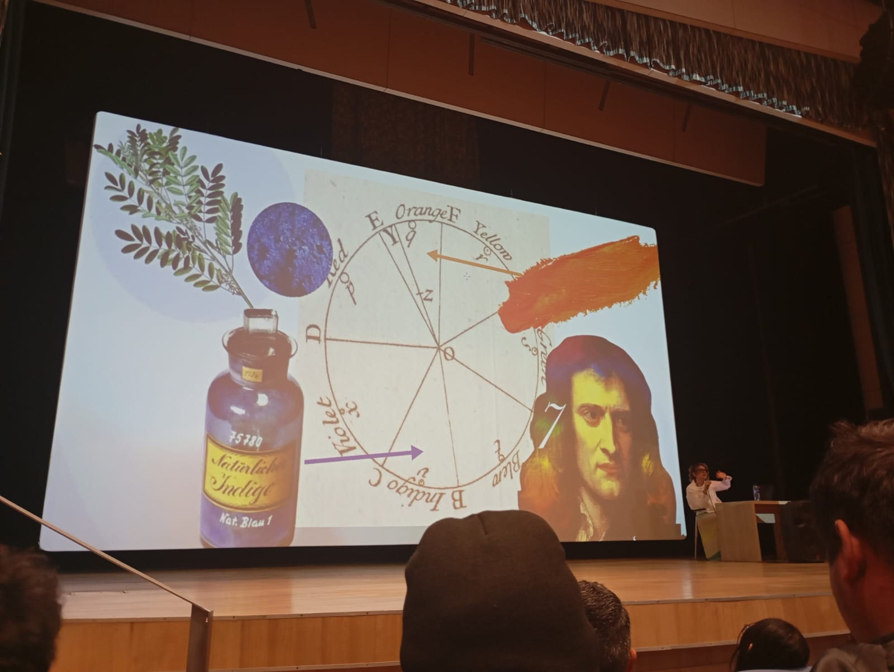
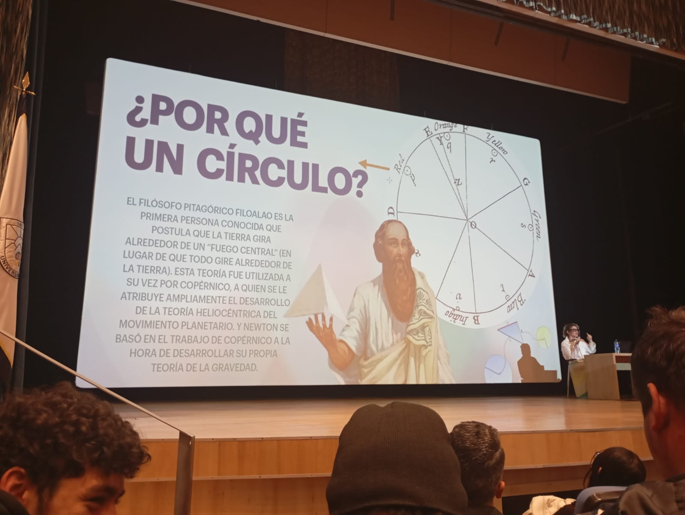
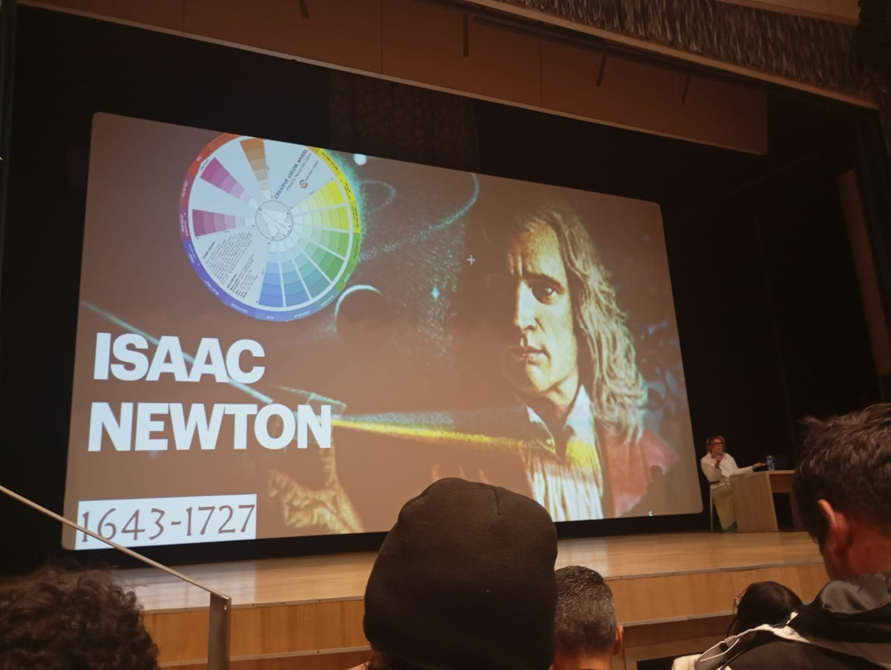
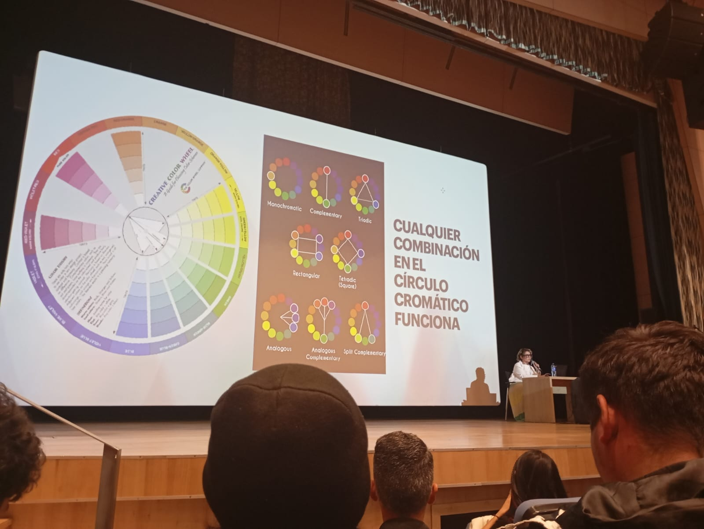
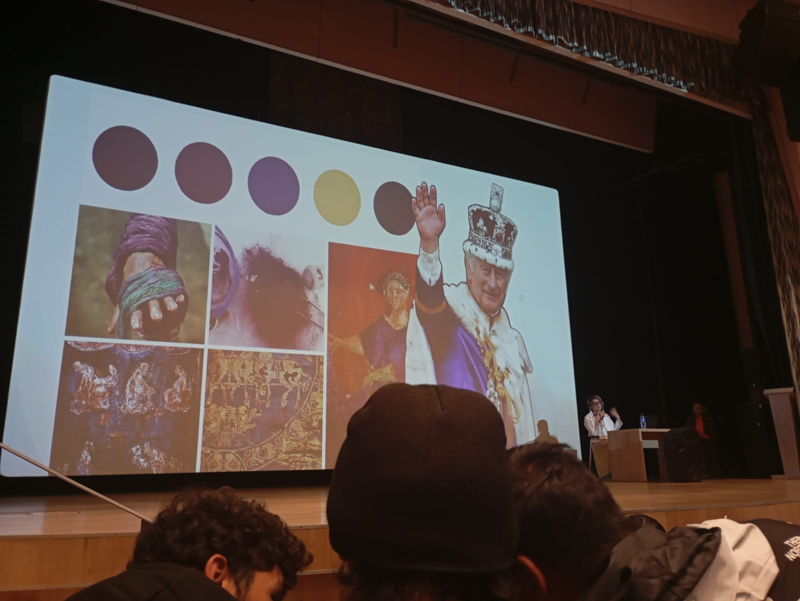
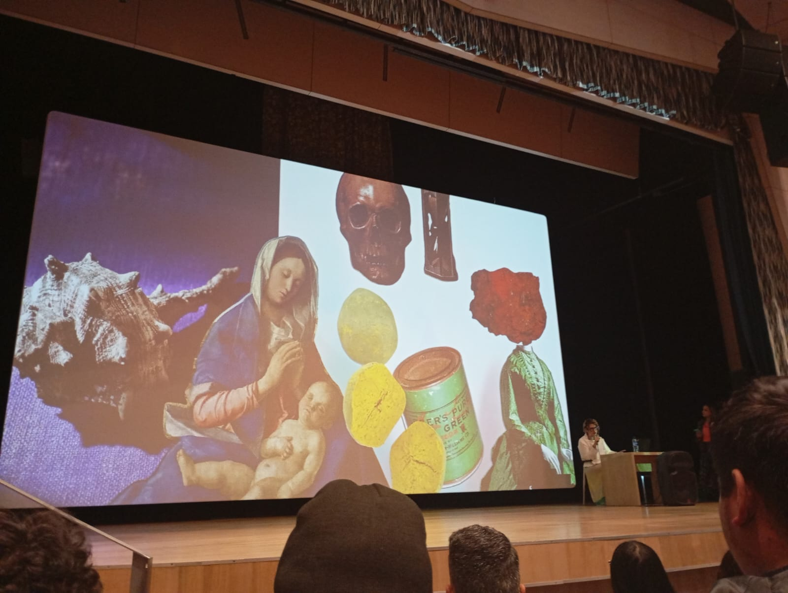
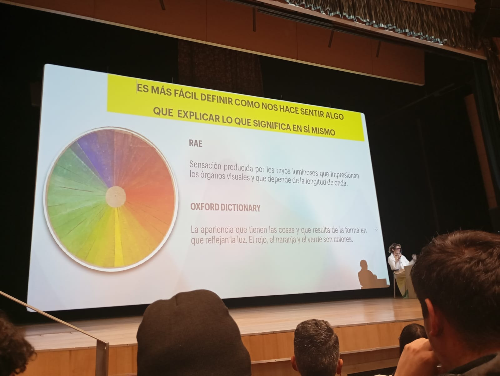
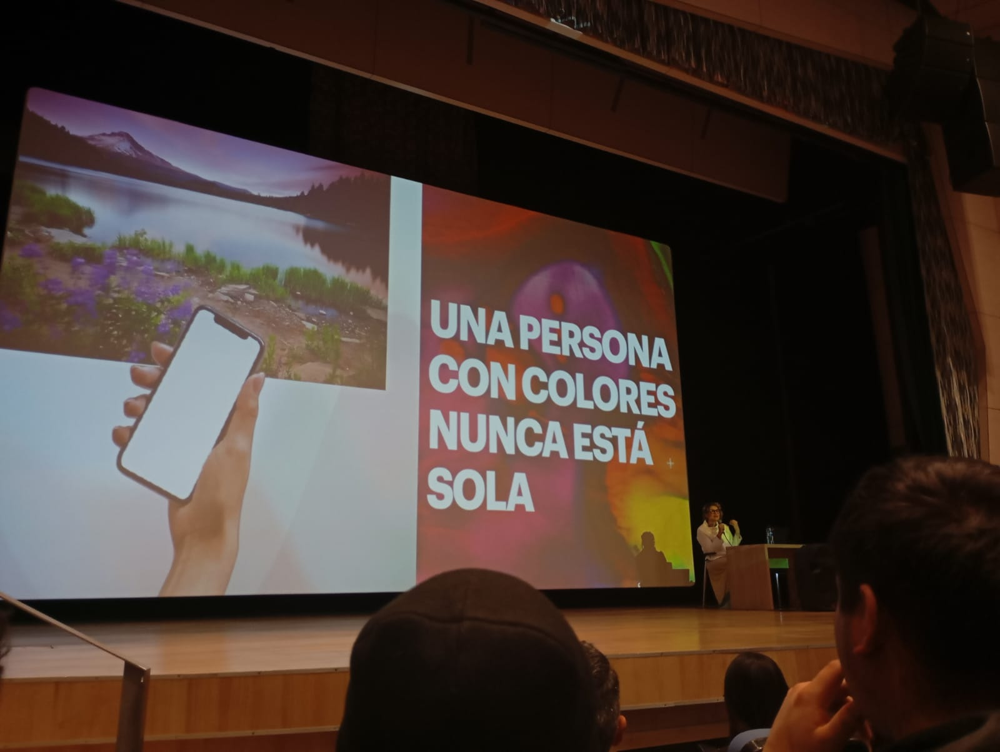

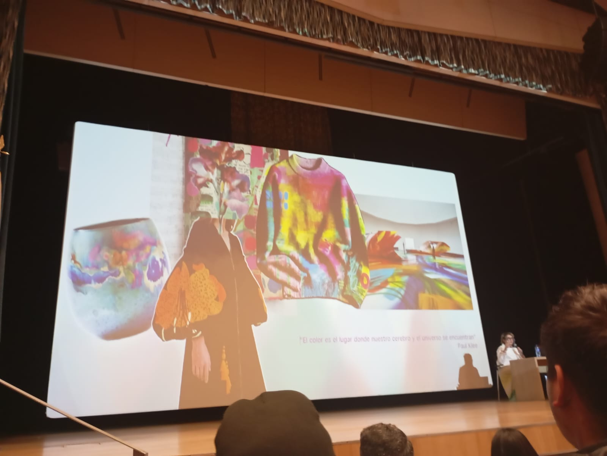
Español
El evento Moda ECCI fue una experiencia muy agradable que me permitió conocer más sobre el origen e historia del color, entendiendo cómo surgieron las primeras ideas sobre el color y cómo estas influyeron en todo lo que vemos y diseñamos hoy en día. Aprendí que el color significa mucho más de lo que normalmente creemos, ya que transmite emociones, tiene significados según la cultura y afecta la manera en que las personas perciben lo que les rodea. Algo que me llamó mucho la atención fue descubrir que cualquier color puede combinar con otro, dependiendo del contexto y la intención con la que se use. A partir de ahora, combinar colores ya no me genera miedo ni inseguridad, sino que lo veo como una oportunidad para expresarme con más libertad en mis proyectos.
English
The Moda ECCI event was a very enjoyable experience that allowed me to learn more about the origin and history of color, understanding how the first ideas about color came about and how they influenced everything we see and create today. I learned that color means much more than we usually think, as it conveys emotions, carries meaning depending on the culture, and affects the way people perceive the world around them. Something that really caught my attention was discovering that any color can work well with another, depending on the context and the intention behind its use. From now on, combining colors no longer feels intimidating, but rather an opportunity to express myself more freely in my projects.